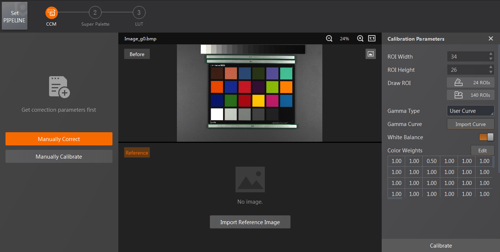
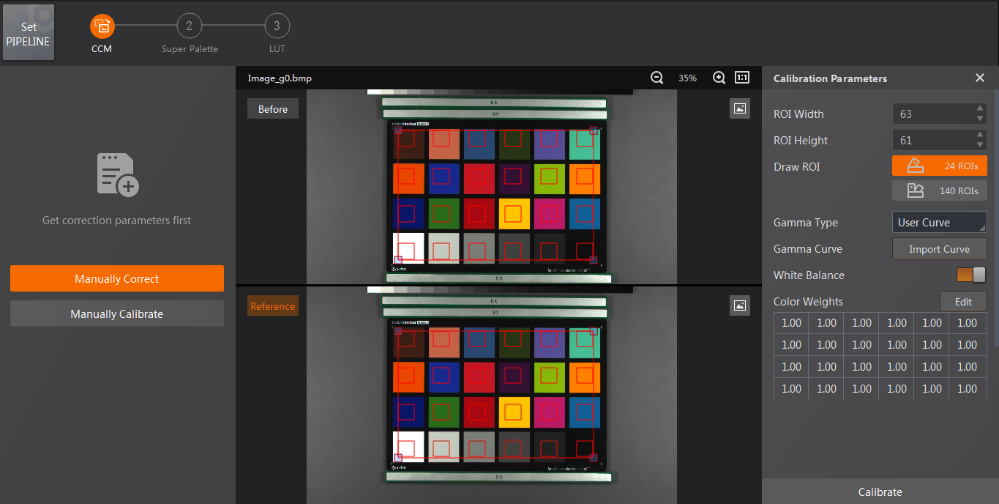
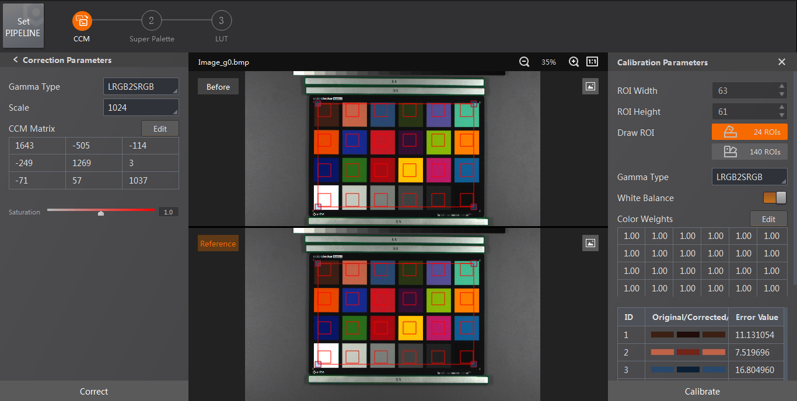
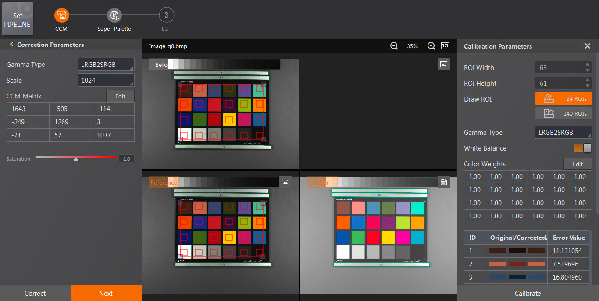

You can conduct the calibration manually and use the calibration results to correct the image.
Make sure you have imported an image and configured the pipeline.
You need to configure the algorithms from left to right successively.
Not all algorithms support calibrating image manually.

Figure 1 Calibration Parameters
Figure 2 Draw ROIFor custom ROI, if you want to change the image's position when drawing the ROIs, you can right-click the image to cause drawing, and then drag the image to change its position. After that, you can right-click the image again to continue drawing the ROIs.
Calibration parameters vary with different algorithms. See detailed descriptions in Algorithm Introduction.

Figure 3 Correction ParametersThe Software will generate correction parameters on the left panel.
The Software will generate several images for calibration on the left of the calibration parameters.
The Software will get the images' gain values via their names. If the name format of the images for calibration is not right, you should enter their gain values. You can click Edit Gain on the Calibration Parameters pane to edit the images' gain values.

Figure 4 Correction Result